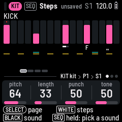
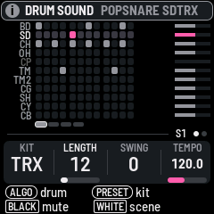
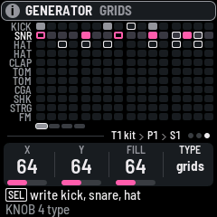

WARP-8
A pocket drum machine for the M-VAVE FM-1: LOOM-8's sequencer, mixer and effects around a single kit of eleven drums, and Hortator's drum models and factory sounds on the keys.



Version 0.12. Not yet tested on an FM-1. It builds and passes its tests in the
simulator; nobody has run this build on the hardware. It installs and uninstalls the way every fm1-base firmware
does, and the installer can put M-VAVE's own firmware back, but until someone has tried it, treat it as an experiment.
Installing is at your own risk. It starts with fresh projects: back up LOOM-8 first if you have work in it.
What's in it
- One kit of eleven drums, each a drum model with its own knobs, envelope, filter, pan and sends, beside a sample track, a slice track and the throws.
- 73 drum models: LOOM-8's thirty and 43 of Hortator's: the 808 and 909 family, Plaits' kicks, snares and hats, a struck membrane, FM, and the TRX and EFM voices measured from the Machinedrum.
- DRUM SOUND: 143 of Hortator's factory sounds by type (kick, snare, hat, clap, tom, perc, cymbal), each on the key and heard as you turn to it. On a kit's pads the PRESETS knob steps through whole kits the same way.
- Sixteen factory kits, six of them made of Hortator's sounds: TRX, EFM, 808, 909, Modern, Hard.
- One rule for the keys: a black key is a drum, a white key is a step of the picked drum, on every page of the kit. Hold a step, a drum or a button and the knobs and keys are its.
- HOME is the whole pattern, a row a drum, and you write it there: the tempo, every drum's length, the swing and the kit on its knobs. ALGORITHM picks the drum on every page; PRESETS is the kit on HOME, the pattern on SEQ, the drum's next sound on EDIT.
- Steps is the picked drum alone: a bar each step's velocity, its chance, ratchets and locks marked, the other drums thin beneath, and the drum's own four knobs under your hand. A drum can have a length of its own and run against the others.
- A held step: velocity, chance, ratchets and nudge on the knobs; on a sound page, the page's knobs locked to that step. The nudge is each drum's own: a snare can drag while the kick on the same step stays put.
- A colour for each drum, the same on every page: its row, its steps, its pad, its key.
- A sound browser: PRESETS on a drum lists Hortator's 143 sounds by engine, each heard as you turn to it; ALGORITHM jumps to the next engine.
- Generators: hold a drum and the knobs set its hits, turn it, vary it; the Generate page previews Euclid, mutate and Mutable Instruments' Grids before it writes them. Grids is also a throw: held, the kick, snare and hat play from the drum map, and SEL keeps what you hear.
- Held buttons, from any page, each drawing its keys: GLO for the mutes, solo and a fill (at once or at the bar line), FX for the throws. EDIT held, a knob turns every drum's.
- A Scenes page beside HOME: every track's pattern in the scene on a knob of its own, the tracks' mutes on the black keys, the kit's drums and their mutes, the scenes on the white keys.
- ALL on an effect's Mix strip: every track into FX I or FX II.
- Weave on the kit's ARP page: two of its patterns crossed live, by bars, steps, rhythm or pitch, always or held as a throw; KEEP AS PATTERN writes the result.
- An FX sequence, a fifth sequence beside the kit, the sample track, the slice track and the throws: its steps hold amounts for the two effects, in eleven lanes, and can ramp from one to the next. It looks and plays as the throws' sequence does.
- Twenty-four throws: LOOM-8's twelve, and twelve more in the second octave: thin, roll, buzz, soft, hard, rise, drop, down, a low-pass, delay and reverb throws, a crusher.
- LOOM-8's sequencer: eight patterns of up to 64 steps, tricks and parameter locks on any step, weave, throws, scenes and a song.
- Two send effects, a mixer with EQ and a compressor on the master.
What's not
- LOOM-8's synth engines (knit, rayon, jacquard, bellows, cane, voile, acid), its other tracks, its conductor and its weave track.
- Hortator's ACID and SAMPL models, and their eight presets.
To go back to the official firmware, use the installer's "Back to the stock firmware", or M-VAVE's updater, M-UPGRADE, from m-vave.com/download. LOOM-8's way of working owes a great deal to teenage engineering's OP-XY. M-VAVE, FM-1, Machinedrum and OP-XY are trademarks of their owners; WARP-8 is not affiliated with any of them, nor with LOOM-8 or Hortator.